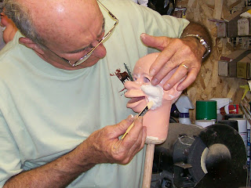

Twain & Will Rogers
6/30/2009
{kind=link}

Customer Comment: I'm full of eager anticipation of the moment when I'll see the finished product (customized Corky). Then it will be my job to give him his voice and personality and put him to work. I've been reading a lot of Mark Twain, Will Rogers, and Stephen Leacock and trying to get his character formulated in my mind. Then, I'll have to keep my arthritic old fingers limbered so that his mouth works with the words as it should. I'm sure he'll brighten many dinner hours when he takes up residence with me here. Thank you. John
* * * * * *
* * * * * *
From Clinton: I did the initial resculpting of the face and ears, sanded it and gave it a coat of primer paint. After studying the painted profile, I decided some additional detail sculpting was required. I'm thinking a few forehead wrinkles may also be appropriate. Once I get the face symmetrical, I'll cut the head open and install the mechanics. The two buck teeth you requested will actually be one of the last steps.